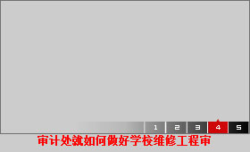

您好，欢迎访问长江大学审计处!
今天是2015年9月17日 星期四
首页
部门概况
政策法规
工作动态
审计资讯
学习园地

more
中华人民共和国审计法(续)
中华人民共和国审计法（续）
中华人民共和国审计法
中国内部审计准则序言
审计署关于内部审计工作的规定
内部审计实务指南第4号——高校内部审计
内部审计实务指南第3号——审计报告
more
审计处召开经济责任审计进驻会议
审计处就如何做好学校维修工程审计工作同后[图]
审计处开始对校工会财务收支进行审计
审计处参与学校部分独立核算单位的财务检查
审计处2015年工程结算工作情况小结
审计处参加工程造价咨询会议
工程审计科召开例会
more
李克强：要实现审计监督全覆盖，不留盲区，不
中国内部审计协会发布新修订的《中国内部审计
审计署：45部门违规转移套取资金1.57亿
审计挖出24个“小金库”——湖北襄樊五名干部
挖空心思套取专项经费 天衣无缝也难过审计关—
一项审计 四人“落马”——湖北随州市水利水电
教育部关于做好领导干部经济责任交接工作并将
more
2015审计公告2号
2015审计公告1号
2014审计公告3号
2014审计公告2号
2014审计公告1号
长江大学审计处荣获湖北省20
2013审计公告7号
2013审计公告6号
more
财务处
长大在线
长江大学首页
中华人民共和国财政部
中华人民共和国审计署
版权所有：长江大学审计处 联系方式：8060070 技术支持：长大在线